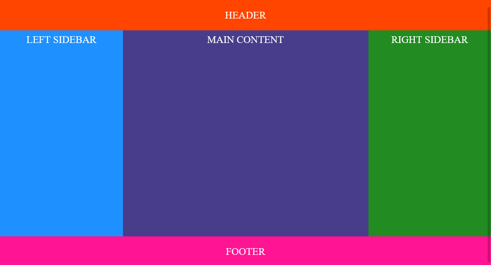

Holy Grail Layout on sivu, jossa on header, footer ja kolme saraketta. Keskimmäisessä sarakkeessa on pääsisältö ja vasen sekä oikea sarake sisältävät navigoinnin ja lisäosia esim. lisätietoja tai mainoksia.
Layoutin voi tehdä eri tavoilla, tässä demossa tutkitaan flexiä ja gridiä.
CSS:lle annetaan tavallisesti Holy Grail layoutissa seuraavia tavoitteita:Tehtävä: Laadi alla olevan kuvan mukainen asemointi gridin avulla.
